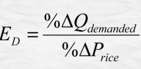

Tumutukoy sa dami ng produkto o serbisyo na gusto at kayang bilhin ng mga mamimili sa isang takdang presyo at partikular na panahon.
Kapag tumataas ang presyo, bumababa ang dami ng gusto at kayang bilhin at kapag bumaba ang presyo, tataas naman ang dami ng gusto at kayang bilhin.
Nangangahulugang ipinagpapalagay na ang presyo lamang ang salik na nakaaapekto sa pagbabago ng quantity demanded, habang ang ibang salik ay hindi nagbabago o nakakaapekto rito.
ipinapahayag nito na kapag tumataas ang presyo ng isang produkto, ang mga mamimili ay hahanap ng pamalit na mas mura. Sa ganon, mababawasan ang dami ng mamimiling gustong bumili ng produktong may mataas na presyo.
nagpapahayag na mas malaki ang halaga ng kinikita kapag mas mababa ang presyo. Kapag mababa ang presyo ng bilihin, mas mataas ang kakayahan ng kita ng tao na makabili ng mas maraming produkto. Kapag tumaas naman ang presyo, lumiliit ang kakayahan ng kaniyang kita na maipambili. Lumiliit ang kakayahan ng kita na makabili ng mga produkto o serbisyo kaya nababawasan ang dami ng mabibiling produkto
Sa pagtaas ng kita ng isang tao, tumataas ang kaniyang kakayahan na bumili ng mas maraming produkto
Kapag ang isang produkto o serbisyo ay naaayon sa iyong panlasa, maaaring tumaas ang demand para dito.
“Bandwagon effect” Dahil sa dami ng bumibili ng isang produkto, nahihikayat kang bumili. Sumabay sa uso
Kung inaasahan ng mga mamimili na tataas ang presyong isang partikular na produkto sa mga susunod na araw o linggo, asahan na tataas ang demand nito sa kasalukuyan habang mababa pa ang presyo nito
Ang mga Pilipino ay nagdiriwang kahit mahal ang mga bilihin
May mga produktong tumataas ang demand depende sa panahon, tulad ng payong sa tag-ulan at ice cream sa tag-init.
MATHEMATICAL FORMULA: DEMAND= KAGUSTUHAN + KAKAYAHAN
Isang matematikong pagpapakita o paglalahad sa ugnayan ng presyo at quantity demanded sa pamamagitan ng formula (Qd)= a-bP
QD= Dami ng demand a= dami ng demand kung saan ang presyo ay 0 b= slope ng demand function P= presyo
Ito ang paraan na ginagamit upang masukat ang pagtugon at kung gaano kalaki ang magiging pagtugon ng quantity demanded ng tao sa isang produkto sa tuwing may pagbabago sa presyo nito.